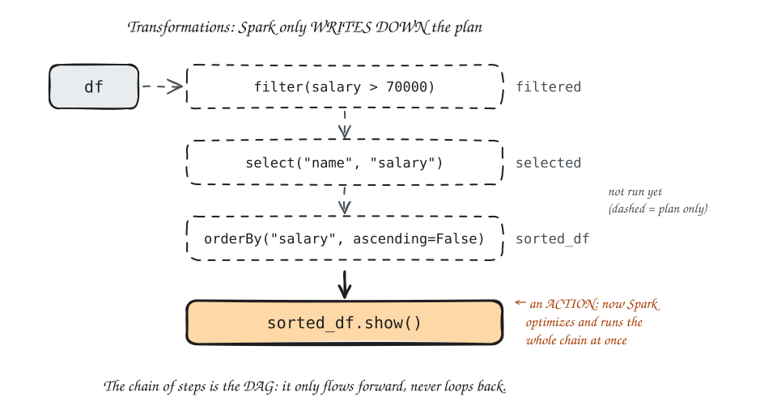

What Is Spark? Architecture, RDDs vs. DataFrames, Lazy Evaluation
Module 4: Apache Spark & PySpark
Session 1 · Mon Oct 26
What Is Spark? Architecture, RDDs vs. DataFrames, Lazy Evaluation
From MapReduce to Spark
MapReduce already gets you scaling out for processing — but it has real limitations:
- Every job writes its intermediate results to disk, even between steps of the same pipeline — slow for anything iterative.
- The Mapper/Reducer API is low-level and verbose — hard to express a multi-step pipeline cleanly.
- No support for interactive ask-a-question-and-get-an-answer-in-seconds queries.
Spark (2009, UC Berkeley) keeps intermediate data in memory instead of writing it to disk between steps — 10–100× faster for iterative workloads. Same scaling-out idea as MapReduce; Module 4 is about doing it faster.
What Is Apache Spark?
Apache Spark is a distributed data-processing engine — the successor to Hadoop MapReduce for most large-scale data work today.
- Key idea: keep intermediate data in memory across steps of a pipeline, instead of writing every step to disk the way MapReduce does.
- Result: 10–100× faster for workloads that reuse the same data across multiple steps (iterative algorithms, interactive queries, multi-stage pipelines).
- Written in Scala, but has full APIs in Python (PySpark — what we use), Java, R, and SQL.
One engine, several tools. Beyond the batch DataFrame work this course focuses on, Spark also has:
- Spark SQL: write actual SQL queries against a DataFrame.
- Structured Streaming: process data as it arrives, not just in batches.
- MLlib: distributed machine learning.
All part of the same engine, not separate tools. We only use the batch/DataFrame piece this semester.
Not tied to HDFS. In our classroom cluster, Spark jobs happen to read from HDFS and get scheduled by YARN, both from Module 3 — but that’s a choice about our setup, not a requirement of Spark itself. Spark can just as easily read from S3, local files, a database, or a Kafka stream; it isn’t tied to HDFS the way MapReduce, in practice, always was.
Why Spark Improves on MapReduce
Picture a pipeline with three steps: filter, then group, then sort.
- MapReduce: step 1 writes its full output to disk. Step 2 reads it back from disk, computes, writes its output to disk. Step 3 does the same. A disk round-trip between every pair of steps.
- Spark: step 1’s output stays in memory. Step 2 reads it from memory, computes, keeps its result in memory. Step 3 does the same. Disk is only touched to read the input, save the result, or when data is too big to fit in memory.
![Two rows, each the same three-step pipeline: filter, then group, then sort. Top row, labeled "MapReduce": an input disk feeds filter. Between filter and group, a red arrow goes down into a red disk labeled "write, then read back" and a second red arrow comes back up into group; the same red disk round-trip sits between group and sort. Sort writes to an output disk. Bottom row, labeled "Spark": an input disk feeds filter, and green arrows labeled "in memory" go straight from filter to group and from group to sort, with no disks in between. Sort writes to an output disk. Caption: "Same three steps. MapReduce: 2 extra disk round-trips. Spark: 0."](diags/04-mr-vs-spark.svg)
Important
This matters most for iterative workloads — anything that reuses the same data repeatedly, like training a machine-learning model over many passes. A single MapReduce-style batch job that runs once and finishes isn’t dramatically slower in MapReduce; it’s repeated work over the same data where Spark’s in-memory model wins big.
RDDs vs. DataFrames
Spark actually has two ways to represent distributed data. You need to know both exist, even though we will work almost entirely with the second one.
| RDD (Resilient Distributed Dataset) | DataFrame | |
|---|---|---|
| What it is | A low-level, distributed collection of arbitrary Python objects | A distributed table — named columns, with a schema |
| Structure | None enforced — Spark doesn’t know what’s inside | Spark knows every column’s name and type |
| Optimization | None — you write exactly what runs | Spark’s optimizer can rewrite your query to run faster |
| Feels like | A distributed Python list | A distributed spreadsheet |
- RDDs came first (Spark’s original data structure) and are still there underneath everything.
- DataFrames were added later, and are what virtually everyone uses for tabular data today — including everything in this course, the labs, and the capstone.
Think about it
If Spark doesn’t know what’s inside an RDD, what can’t it do that it can do with a DataFrame? (Hint: think about what “optimizing a query” requires knowing about the data first.)
Answer: without column names and types, Spark can’t optimize. It can’t reorder operations, push a filter down to happen earlier, skip columns you never use, or pick an efficient join strategy. With an RDD it just runs your code exactly as written.
Spark Architecture
![Top left, an orange box: "Driver (your PySpark code + SparkSession)". An arrow labeled "1. ask for executors" goes right to a violet box: "YARN ResourceManager (cluster manager)". From the ResourceManager, three violet arrows labeled "2. launch executors" fan down to three worker boxes, "Worker 1: NodeManager", "Worker 2: NodeManager" and "Worker 3: NodeManager". Each worker holds a blue "Executor" box and, under it, two small green boxes: part 1 and part 2 on worker 1, part 3 and part 4 on worker 2, part 5 and part 6 on worker 3. A dashed orange line runs from the Driver down and along the bottom, with a two-headed arrow up into each worker, labeled "3. driver sends tasks, executors send results back". Caption: "Same YARN as Module 3. It now hands out Spark executors instead of Map/Reduce tasks." Smaller caption: "(green = slices of the data each executor keeps in memory)".](diags/04-spark-architecture.svg)
- Driver: coordinates the whole computation — your code runs here, and it decides what work to hand out. Plays the same role Module 3’s ApplicationMaster played for a MapReduce job: one coordinator, dispatched for this one application.
- Executor: a worker process that actually runs tasks and holds a slice of the data in memory — the same role Module 3’s NodeManager-run tasks played, just for Spark tasks instead of Map/Reduce tasks.
- Cluster manager: allocates machines/resources to your job — in our classroom cluster, that’s YARN, the exact same resource manager Module 3 used for MapReduce jobs. Spark doesn’t bring its own scheduler here; it asks YARN for workers, the same way a MapReduce job did.
SparkSession — Your Entry Point
- Every PySpark program starts by creating (or reusing) exactly one
SparkSession. .getOrCreate()— if a session already exists, reuse it; otherwise, create a new one.- In our classroom setup: in Colab (Labs 6–7) you build the session yourself, with
.master("local[*]"). On the classroom cluster, every%%sparkcell (viasparkmagic, from Lab 7) already has asparkobject ready to use, so you skip theSparkSession.builderstep in Lab 8 and the capstone. You’ll still write it by hand for Checkpoint 4, since checkpoints are graded as standalone code.
Creating and Inspecting a DataFrame
printSchema()shows you the column names and the types Spark inferred for each.show()prints rows to the screen — and, importantly, it’s the first thing on this slide that actually runs anything (more on why that distinction matters in a few slides).- You can also read a DataFrame straight from a file — covered in full next session.
Output of printSchema():
root
|-- name: string (nullable = true)
|-- department: string (nullable = true)
|-- salary: long (nullable = true)Output of show():
+-----+-----------+------+
| name| department|salary|
+-----+-----------+------+
|Alice|Engineering| 95000|
| Bob| Marketing| 62000|
+-----+-----------+------+Python integers become Spark’s long (a 64-bit integer, like Java’s long), not int.
DataFrames Are Immutable
Every PySpark DataFrame, once created, never changes. Every operation returns a brand-new DataFrame — the original is always left untouched.
Important
This trips up almost everyone coming from pandas or spreadsheets, where you’re used to modifying data in place. In PySpark, if you don’t assign the result of an operation to a variable, the result is thrown away and nothing changes. df.filter(...) on its own line, with no =, does nothing useful.
Lazy Evaluation — The Core Idea
Output (on the two-row df from before):
+-----+------+
| name|salary|
+-----+------+
|Alice| 95000|
+-----+------+- Nothing above
sorted_df.show()actually touches the data. Spark just records each step as part of a plan — this is called lazy evaluation. - That recorded plan has a name: a DAG (Directed Acyclic Graph) — a chain of steps that only ever flows forward, never loops back on itself. Each transformation you chain adds one more step to the DAG.
- Only when you call an action (
show(),count(), …) does Spark look at the entire DAG you built, optimize it, and run it all at once. - Why bother? Because seeing the whole plan first lets Spark skip unnecessary work — for example, here only
nameandsalaryare ever used, so Spark can drop thedepartmentcolumn straight away instead of carrying it through every step.

70000)", labeled filtered. A dashed arrow leads down to a dashed box "select("name", "salary")", labeled selected, then to a dashed box "orderBy("salary", ascending=False)", labeled sorted_df. A note beside them reads "not run yet (dashed = plan only)". A thick solid arrow leads down to a solid orange box "sorted_df.show()", annotated "an ACTION: now Spark optimizes and runs the whole chain at once". Caption: "The chain of steps is the DAG: it only flows forward, never loops back."" width="760" class="r-stretch">Pause & Discuss: What Actually Ran?
Breather — think on your own (2 min), then we discuss
df has 10 billion rows of employee data.
Lines 1 and 2 return instantly. Why?
What does line 3 print: the number of high earners overall, or high earners in Marketing?
How many times does Spark actually go through the 10 billion rows?
Transformations vs. Actions
| Transformations (lazy — build the plan) | Actions (trigger execution) |
|---|---|
filter() |
show() |
select() |
count() |
groupBy() |
collect() |
orderBy() |
write.csv() |
withColumn() |
first() |
join() |
take(n) |
Tip
If a line of PySpark code returns a DataFrame, it’s a transformation. If it returns data or writes a file, it’s an action.
(One wrinkle: groupBy() returns a GroupedData object, not a DataFrame. It’s still lazy, and the .agg() or .count() after it turns it back into a DataFrame.)
Lab 6 Recap / Lab 7 Preview
- Lab 6 (Oct 23): Python fluency in Colab, plus your first local Spark session in Colab.
- Lab 7 (this Friday, Oct 30): your first real PySpark job, in Colab — create a DataFrame, apply transformations, and watch the transformation-vs-action distinction play out live, including using
.explain()to see Spark’s execution plan for yourself. Then connect to the classroom cluster withsparkmagicand run the same code there.
Have your classroom-terminal username and password (Lab 4/5) handy on Friday — Lab 7’s last task uses them.
Bridge: Two More Sessions to Go
Today was the concepts: what Spark is, how it’s built, and the transformation/action model that everything else depends on.
Next session (Wed Oct 28): actually loading real data and putting transformations to work — plus Checkpoint 4.
COSC420 · Module 4 · Apache Spark & PySpark